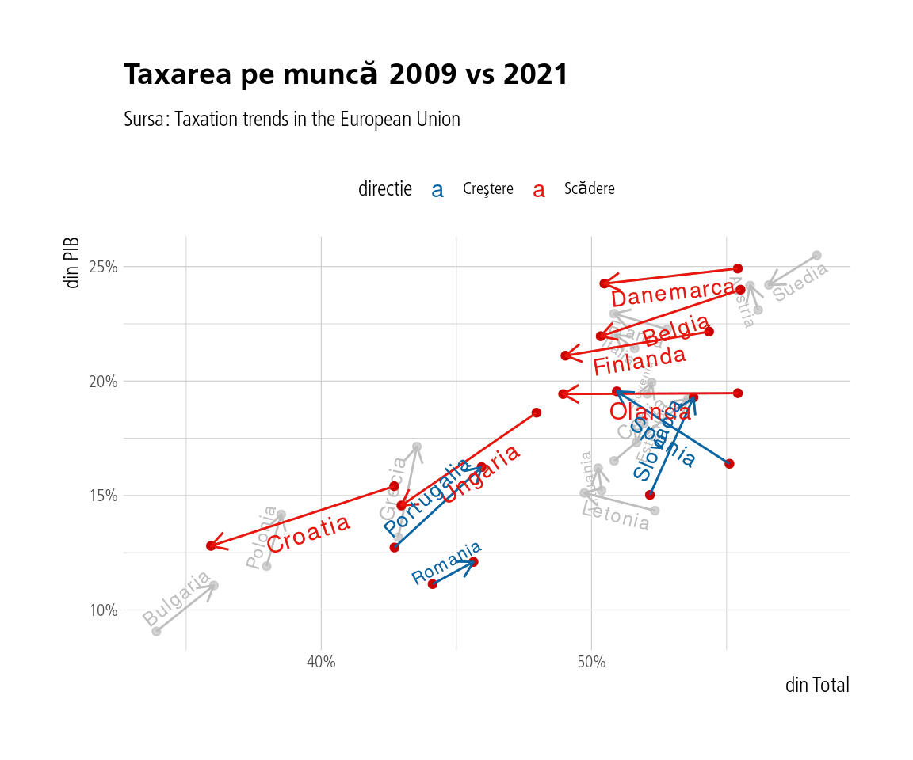

În acest capitol ne vom ocupa de tipurile de taxe calculate de Comisia Europeană. În speţă este vorba de taxele pe capital, contribuţii, muncă, consum şi proprietate. Datele brute sunt aici.
Vom ilustra situaţia cu toate aceste tipuri de taxe în grafice cu două axe - pe axa x fiind procentul din total taxe iar pe y procentul din PIB colectat. Să începem cu taxarea pe capital.
Arată codul
grafice(taxari, var ="capital", numar=10) +labs(title=paste("Taxarea pe capital", "2009 vs 2021"), subtitle="Sursa: Taxation trends in the European Union", x="din Total", y="din PIB")
Taxarea pe contribuţii
Arată codul
grafice(taxari, var ="contributii", numar=10) +labs(title=paste("Taxarea pe contribuţii", "2009 vs 2021"), subtitle="Sursa: Taxation trends in the European Union", x="din Total", y="din PIB") +scale_x_continuous(limits =c(25, 50), labels=scales::percent_format(scale=1)) +scale_y_continuous(limits=c(6, 20), labels=scales::percent_format(scale=1))
Taxarea pe muncă
Arată codul
grafice(taxari, var ="munca", numar=10) +labs(title=paste("Taxarea pe muncă", "2009 vs 2021"), subtitle="Sursa: Taxation trends in the European Union", x="din Total", y="din PIB")

Taxarea pe consum
Arată codul
grafice(taxari, var ="consum", numar=10) +labs(title=paste("Taxarea pe consum", "2009 vs 2021"), subtitle="Sursa: Taxation trends in the European Union", x="din Total", y="din PIB")
Taxele pe proprietate
Arată codul
grafice(taxari, var ="proprietate", numar=10) +labs(title=paste("Taxarea pe proprietate", "2009 vs 2021"), subtitle="Sursa: Taxation trends in the European Union", x="din Total", y="din PIB")
Şi multidimensional, o hartă a taxării în Europa. Vom folosi ca valori pentru diferitele tipuri de taxări media între 2018-2021 pentru o imagine mai robustă.
Arată codul
mat <- taxari %>%filter(what=="PIB") %>%mutate(time=as.numeric(time)) %>%filter(time>"2017") %>%group_by(geo) %>%summarise(across(capital:proprietate, mean)) %>%select(geo, capital:proprietate) %>%filter(geo!="Irlanda") %>%column_to_rownames("geo") rbiplot(mat, p=0, clusters=3, k=5) +labs(title="Componentele principale ale diferitelor tipuri de taxe", subtitle="Media 2018-2021")
Observăm că taxarea pe capital, proprietate şi muncă sunt corelate pozitiv şi invers corelate fiecare în mod negativ cu taxarea pe consum. Contribuţiile sunt relativ puţin corelate cu restul variabilelor. România se află împreună cu statele est-europene şi baltice în zona taxelor care taxează mai degrabă consumul decât celelalte categorii. Mai jos, un tabel cu aceste valori pentru România.